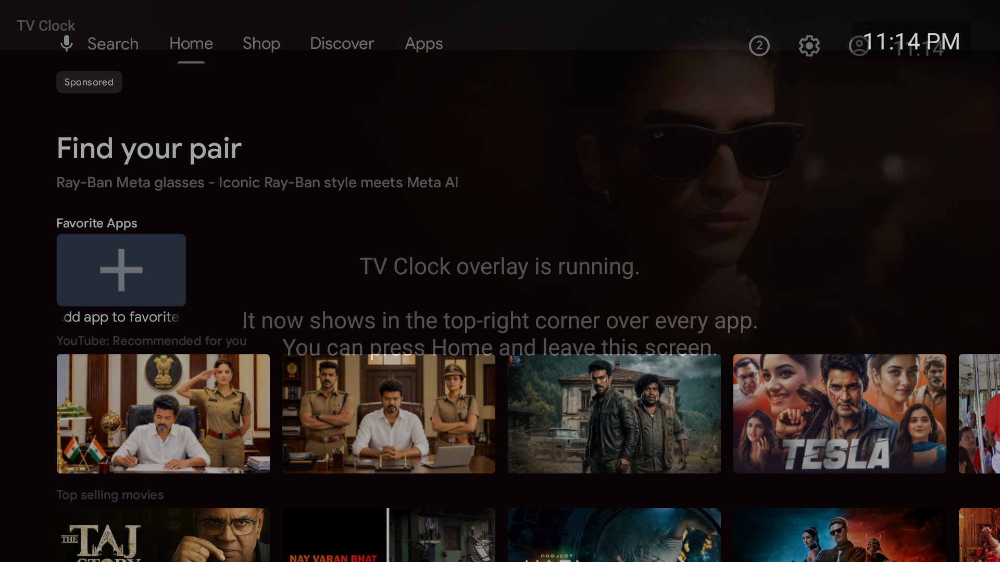

An Android TV / Google TV app that pins the current time to the top-right corner, over every other app.
com.tatav.tvclock
Gradle 8.9 · AGP 8.7.2 · Kotlin 1.9.24 · JDK 21
minSdk 21 · targetSdk 33 · compileSdk 34
Build: SUCCESS ✓
Verified on Android TV emulator ✓
Built the APK, spun up a Google TV emulator (the android-34/android-tv arm64 image you already had),
installed the app, granted the overlay permission, and pressed Home. The clock renders on top of the
Google TV launcher — exactly the goal:

isForeground=true and stayed alive after leaving the app.There is no Java-only restriction on Android TV or Google TV. They run the same Android runtime as phones, and Kotlin compiles to the same bytecode Java does. This app is written in Kotlin — three small files. Anything you can do on TV in Java you can do in Kotlin and vice-versa; the SDK, Leanback, WindowManager, services — all identical.
A normal app can only draw inside its own window, so it disappears the moment you switch to Netflix or YouTube.
To float something on top of everything, Android has one mechanism: a system overlay window.
You ask the WindowManager to add a view of type TYPE_APPLICATION_OVERLAY, which the
system composites above other apps. That view is a plain TextView showing the time, refreshed every
second.
To keep that window alive after you leave the app, it's owned by a foreground service (not an Activity). Foreground services survive app-switching and show a small notification so the system won't kill them.
TextView to the WindowManager at
Gravity.TOP or END and ticks every second. Flags NOT_FOCUSABLE +
NOT_TOUCHABLE mean it never steals remote-control input.
BOOT_COMPLETED and restarts the overlay after the TV reboots — so you never have to
open the app again once it's set up.
LEANBACK_LAUNCHER intent + a banner so the app appears on the TV home
row, and requests SYSTEM_ALERT_WINDOW, FOREGROUND_SERVICE,
RECEIVE_BOOT_COMPLETED.
| Item | Detail |
|---|---|
| Android SDK | Already present at ~/Library/Android/sdk (platforms 34–36, build-tools 34–36, and an android-34/android-tv arm64 system image). |
| JDK | You had only JDK 23 & 25 — both too new for the Android Gradle Plugin. Installed OpenJDK 21 (LTS) via Homebrew: brew install openjdk@21. |
| Gradle wrapper | Pinned Gradle 8.9 (./gradlew) so builds are reproducible regardless of the system Gradle (which was 9.0, too new for AGP 8.7). |
| Emulator (AVD) | Created tv_clock from the TV image and booted it to verify the overlay live. |
| Project | Hand-written from scratch — no Android Studio. Pure framework, zero third-party dependencies. |
# create a TV AVD from the image you already have (once) echo no | ~/Library/Android/sdk/cmdline-tools/latest/bin/avdmanager create avd \ -n tv_clock -k "system-images;android-34;android-tv;arm64-v8a" -d tv_1080p # boot it ~/Library/Android/sdk/emulator/emulator -avd tv_clock -gpu auto & # build + install + grant + launch (the emulator counts as a "device") ./deploy.sh
./deploy.sh 192.168.1.50 # your TV's IPIt connects over the network, installs the APK, grants the overlay permission, and launches the app. Accept the "Allow debugging?" prompt on the TV the first time.
deploy.sh): Android TV usually has
no on-screen setting for "Draw over other apps", so the normal permission dialog never appears. It's
granted over ADB instead:
adb shell appops set com.tatav.tvclock SYSTEM_ALERT_WINDOW allowWithout this, the app runs but shows no clock.
# rebuild the APK (JDK 21 required for the build) JAVA_HOME=/opt/homebrew/opt/openjdk@21/libexec/openjdk.jdk/Contents/Home ./gradlew assembleDebug adb shell am force-stop com.tatav.tvclock # stop the clock adb uninstall com.tatav.tvclock # remove it
"h:mm a" (e.g. 9:41 PM) in
ClockOverlayService.kt. Change it to "HH:mm" for 24-hour.params.x/y, setTextSize,
setBackgroundColor in the same file, then rebuild.Projects/tv-overlay-clock/ ├── build.gradle # AGP 8.7.2 + Kotlin 1.9.24 plugins ├── settings.gradle # google() + mavenCentral() repos ├── gradle.properties / local.properties ├── deploy.sh # build + install + grant + launch ├── gradlew / gradle/… # pinned Gradle 8.9 wrapper ├── docs/verified-on-emulator.png ├── EXPLAINER.html # this file └── app/ ├── build.gradle # sdk levels, Kotlin jvmTarget 17 └── src/main/ ├── AndroidManifest.xml ├── java/com/tatav/tvclock/ │ ├── MainActivity.kt # launcher; starts service │ ├── ClockOverlayService.kt # the overlay itself │ └── BootReceiver.kt # restart on reboot └── res/ ├── values/strings.xml └── drawable/banner.xml # TV launcher banner